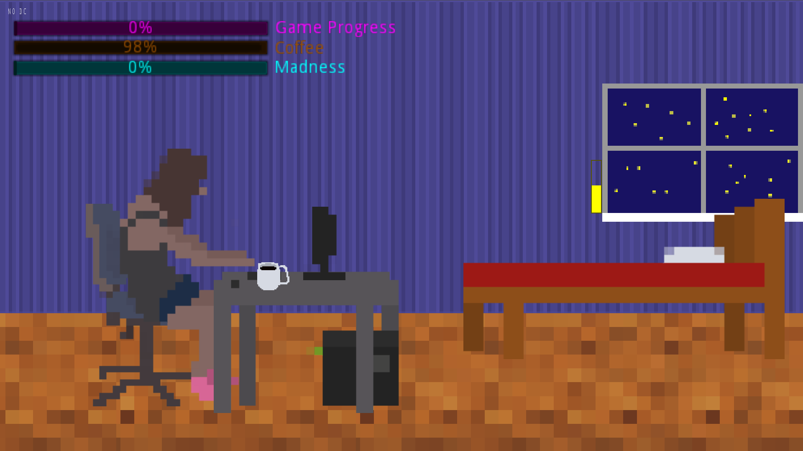
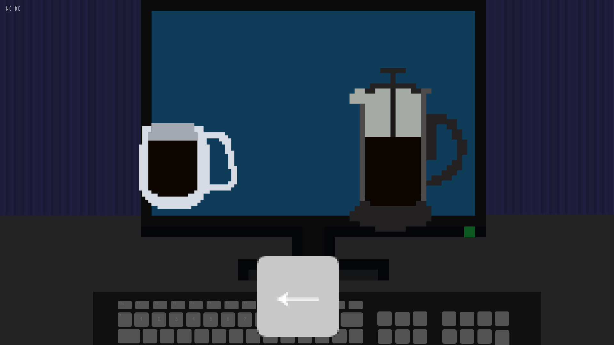
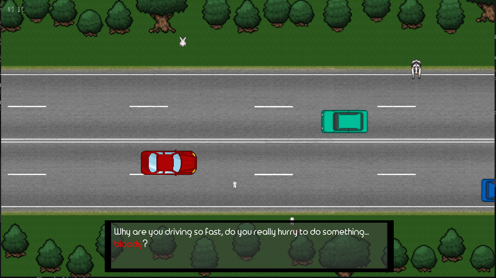

Here you can find a list of things that I've made (and am somewhat proud of), either in my spare time, or as a part of my education.
Game Jam Simulator is a small game, where the player takes control of a game developer during a game jam. The game was developed, unsurprisingly, during a 48-hour game jam. The player must finish their work by managing their Game Progress, Coffee and Madness levels through various minigames and events.
I have also created most of the graphical assets for this game.
 Pacman 3D is a 3D version of Pacman, developed from the ground up in OpenGL. It's more of a technical demo, featuring only two levels.
One of These Days is a game, developed during a 48-hour game jam. In the game, the player must control a car during a heavy traffic, consisting of both other drivers, as well as wildlife. The goal of the game is to not kill anyone.
Teleportation Game is a small and very crude technical demo, created in Unity, developed during a 48-hour game jam. It plays around with the idea of the player using a gun to teleport around a level, made out of free-floating platforms, and a melee weapon to kill enemies.
QuaggaMusic is a rest API, developed in Go. It uses multiple different APIs and provides information about various musical artists, events and songs. It also features a random playlist generator, based on user input. The API keys are out of date, so some of the functionality no longer works, but tfeel free to check out the source.